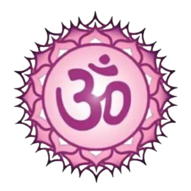

Welcome
To
AUM FREE YOGA CENTER
 ABOUT YOGA
Aum Free Yoga Center, established in 2015 by Chilaka Venkata Ramesh, is a community-driven initiative located in Visakhapatnam. The center is committed to promoting physical, mental, and spiritual well-being through the ancient practices of yoga (Asana, pranayama and meditation). With a mission to make these practices accessible to everyone, the center provides daily free yoga classes and meditation sessions.
1. Diverse Classes: The center may offer a variety of yoga classes (physical, mental and spiritual) suitable for practitioners of all from beginners to advanced. This could include Ashtanga yoga, ensuring that participants can find a practice that suits their needs.
2. Meditation Session: In addition to yoga classes, the center may conduct daily meditation sessions to help participants cultivate mindfulness and inner peace. These sessions could focus on various meditation techniques, promoting mental clarity and relaxation.. Please
have a look at our classes and
fill out the contact form for more information and/or to join us.
 BRANCHES
BRANCHES
AUM FREE YOGA CENTER
Seethamadhara(Narayana Branch)
Timings : 5:15 AM to 6:15 AM
AUM FREE YOGA CENTER
Seethamadhara(Lansum Oxygen Towers)
Timings : 6:20AM to 7:20AM
AUM FREE YOGA CENTER
Daspalla Hills(Gandhi Park)
Timings : 7:30AM to 8:30AM
AUM FREE YOGA CENTER
(For Women)MVP Colony
(Gadiraju Empire)
Timings : 4:00PM to 5:00PM
AUM FREE YOGA CENTER
(For Women)Kotha Road
(Reading Room)
Timings : 4:00PM to 5:00PAM
The Seven Chakras

The concept of chakras originates from ancient Indian spiritual traditions. Chakras are believed to be energy centers within the body, each corresponding to different aspects of physical, emotional, and spiritual well-being.
Chrown Chakra (Sahasrara):
The Crown Chakra, also known as the Sahasrara Chakra in Sanskrit, is the seventh energy center among the seven chakras located along the spine. The term “Sahasrara” means “thousand-petaled”, symbolizing a thousand-petaled lotus flower.
- Location: Top of the head
- Functions: Cosmic perception, intuition, and inspiration
- Key Phrase: I KNOW
Here are some yoga poses beneficial for the Crown Chakra:
1. Padmasana (Lotus Pose):
Begin with a cross-legged seating position.
Close your eyes and connect with your breath.
Lotus Pose promotes stillness, meditation, and spiritual awareness.
2. Sirsasana (Headstand):
Headstand brings energy to the crown of your head.
Be cautious and practice under guidance to avoid injury.

Third Eye (Ajna) :
The Ajna Chakra, also known as the Third Eye Chakra, holds a mystical significance in yogic philosophy. Positioned between the eyebrows, it serves as a bridge between the physical and spiritual realms. Ajna chakra acts as the seat of the conscious mind during wakefulness. It enables us to perceive beyond the physical senses, tapping into our sixth sense. When balanced, it fosters self-awareness, clarity, and emotional equilibrium.
- Location: Center of the eyebrows
- Functions: Knowledge, perception, and mental organization
- Key Phrase: I SEE
Here are some yoga poses beneficial for the Crown Chakra:
1. Padmasana (Lotus Pose):
Begin with a cross-legged seating position.
Close your eyes and connect with your breath.
Lotus Pose promotes stillness, meditation, and spiritual awareness.
2. Sasangasana (Rabbit Pose):
Start in Child's Pose (Balasana). Reach back and hold your heels with your hands. Tuck your chin to your chest and round your spine. Roll onto the crown of your head, pressing your forehead toward your knees. Breathe deeply and hold the pose.

 Throat Chakra (Vishuddha):
Throat Chakra (Vishuddha):
The Throat Chakra, also known as the Vishuddha Chakra, is the fifth energy center among the seven chakras located at the base of the throat. It governs communication, self-expression, and truth.
- Location: Base of the throat
- Functions: Communication, self-expression, and truth
- Key Phrase: I SPEAK
Here are some yoga poses beneficial for the Throat Chakra:
1. Matsyasana (Fish Pose):
Lie on your back with your legs extended and arms at your sides.
Press your forearms and elbows into the floor as you arch your back and lift your chest towards the sky.
2. Halasana (Plow Pose):
Lie on your back with your arms by your sides and palms facing down.
Lift your legs overhead and bring them towards the floor behind your head, keeping your back straight.

 Heart Chakra (Anahata):
Heart Chakra (Anahata):
The Heart Chakra, also known as the Anahata Chakra, is the fourth energy center among the seven chakras located at the center of the chest. It governs love, compassion, and emotional balance.
- Location: Center of the chest
- Functions: Love, compassion, and emotional healing
- Key Phrase: I LOVE
Here are some yoga poses beneficial for the Heart Chakra:
1. Urdhva Mukha Svanasana (Upward-Facing Dog Pose):
Lie face down on the floor with your hands under your shoulders.
Press into your palms and lift your chest off the ground while straightening your arms.
2. Bhujangasana (Cobra Pose):
Lie face down on the floor with your palms under your shoulders.
Inhale and lift your chest off the ground, keeping your elbows close to your body.

 Solar Plexus Chakra (Manipura):
Solar Plexus Chakra (Manipura):
The Solar Plexus Chakra, also known as the Manipura Chakra, is the third energy center among the seven chakras located in the upper abdomen. It governs self-esteem, confidence, and personal power.
- Location: Upper abdomen
- Functions: Self-esteem, confidence, and personal power
- Key Phrase: I DO
Here are some yoga poses beneficial for the Solar Plexus Chakra:
1. Navasana (Boat Pose):
Sit on the floor with your knees bent and feet flat on the ground.
Lean back slightly and lift your feet off the ground, balancing on your sit bones.
2. Dhanurasana (Bow Pose):
Lie face down on the floor with your arms by your sides.
Bend your knees and reach back to hold onto your ankles.
Inhale and lift your chest and legs off the ground, balancing on your abdomen.

 Sacral Chakra (Svadhishthana):
Sacral Chakra (Svadhishthana):
The Sacral Chakra, also known as the Svadhishthana Chakra, is the second energy center among the seven chakras located in the lower abdomen. It governs creativity, sexuality, and emotional balance.
- Location: Lower abdomen
- Functions: Creativity, sexuality, and emotional balance
- Key Phrase: I FEEL
Here are some yoga poses beneficial for the Sacral Chakra:
1. Baddha Konasana (Bound Angle Pose):
Sit on the floor with your legs extended in front of you.
Bend your knees and bring the soles of your feet together, allowing your knees to fall open.
2. Supta Baddha Konasana (Reclining Bound Angle Pose):
Lie on your back with your knees bent and feet flat on the floor.
Bring the soles of your feet together and allow your knees to fall open to the sides.

 Root Chakra (Muladhara):
Root Chakra (Muladhara):
The Root Chakra, also known as the Muladhara Chakra, is the first energy center among the seven chakras located at the base of the spine. It governs stability, security, and survival instincts.
- Location: Base of the spine
- Functions: Stability, security, and survival instincts
- Key Phrase: I AM
Here are some yoga poses beneficial for the Root Chakra:
1. Tadasana (Mountain Pose):
Stand tall with your feet together, arms at your sides, and shoulders relaxed.
Ground down through your feet and imagine roots extending from your body into the earth.
2. Virabhadrasana I (Warrior Pose I):
Start in Tadasana (Mountain Pose).
Step one foot back and bend the front knee, keeping the back leg straight.
Raise your arms overhead, stretching through your fingertips.